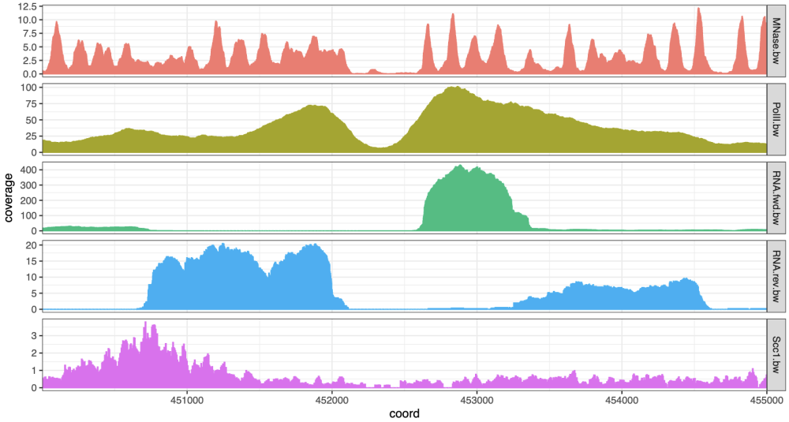

~~~~~~~~~~~~~~~ Import genomic features into a named list ~~~~~~~~~~~~~~~
features <- list( TSSs = system.file(“extdata”, “TSSs.bed”, package = “tidyCoverage”), conv_sites = system.file(“extdata”, “conv_transcription_loci.bed”, package = “tidyCoverage”) ) |> map(~ import(.x))
~~~~~~~~~~~~ Import coverage tracks into a BigWigFileList ~~~~~~~~~~~~~
tracks <- list( Scc1 = system.file(“extdata”, “Scc1.bw”, package = “tidyCoverage”), RNA_fwd = system.file(“extdata”, “RNA.fwd.bw”, package = “tidyCoverage”), RNA_rev = system.file(“extdata”, “RNA.rev.bw”, package = “tidyCoverage”), PolII = system.file(“extdata”, “PolII.bw”, package = “tidyCoverage”), MNase = system.file(“extdata”, “MNase.bw”, package = “tidyCoverage”) ) |> BigWigFileList()
## Plot tracks coverage aggregated over genomic features
```{r}
CoverageExperiment(tracks, features, width = 3000, ignore.strand = FALSE) |>
filter(track %in% c('MNase', 'PolII')) |>
filter(features == 'TSSs') |>
aggregate() |>
ggplot(aes(x = coord, y = mean)) +
geom_ribbon(aes(ymin = ci_low, ymax = ci_high, fill = track), alpha = 0.2) +
geom_line(aes(col = track)) +
facet_grid(track ~ ., scales = "free") +
labs(x = 'Distance from TSS', y = 'Signal coverage') +
theme_bw() +
theme(legend.position = 'top')
Plot coverage over a single locus
{r} CoverageExperiment(tracks, GRanges("II:450001-455000"), width = 5000) |> expand() |> ggplot(aes(x = coord, y = coverage)) + geom_col(aes(fill = track, col = track)) + facet_grid(track~., scales = 'free') + scale_x_continuous(expand = c(0, 0)) + theme_bw() + theme(legend.position = "none", aspect.ratio = 0.1)
